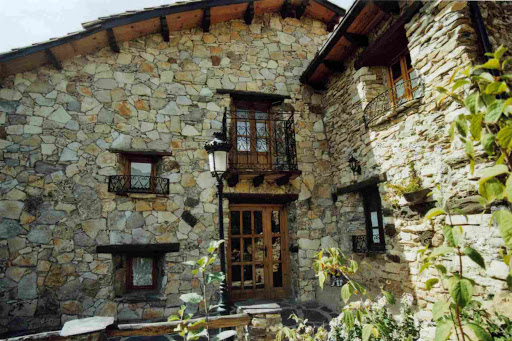

Casa Mercedes
Precio: 35,50€/Noche
Córdoba
Máx 5 personas
Precio: 35,50€/Noche
Córdoba
Máx 5 personas
Precio: 50,50€/Noche
Córdoba
Máx 7 personas

Precio: 92,99€/Noche
Almendral de la cañada,Toledo
Máx 5 personas


C/ El Cercaico, 4 - Elche de la Sierra (Córdoba)

tahonarurales@gmail.com

+34-645-321-574